Скриншоты App Store — Salvora
Одна страница на всё: кадры, боли по порядку, заголовки с обоснованием, бриф на съёмку и разбор провалов. Сверху — самое свежее, ниже — предыдущие попытки и справочные разделы. Так и продолжаем: каждый новый раунд добавляется сверху.
t4 · история для врача → возможные триггеры → фото и сравнение
21 сентября 2026 · новый раунд после обратной связиНовый концепт для ревью От общих обещаний — к узнаваемому моменту: родитель на приёме, раздражающий рукав, телефон перед участком кожи. Ключевая фраза выделена цветом и подчёркиванием; под ней два крупных буллета.
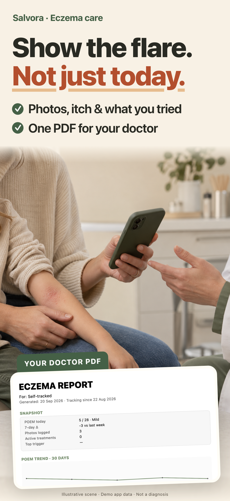
Скачать PNG · 1320 × 2868
{kind=link}
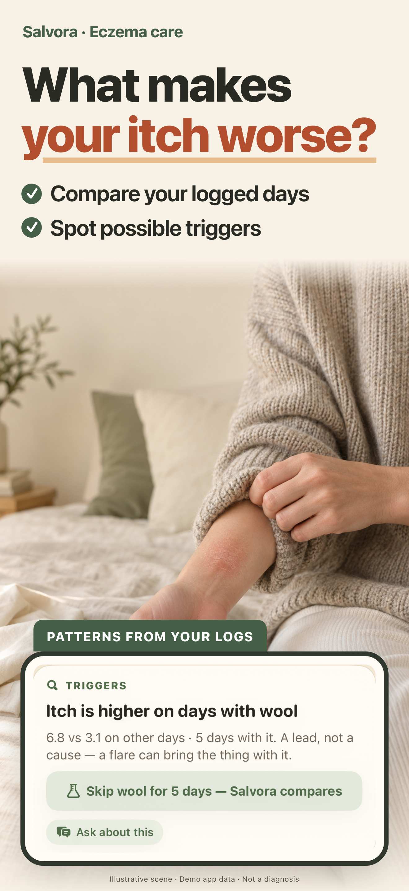
Скачать PNG · 1320 × 2868
{kind=link}
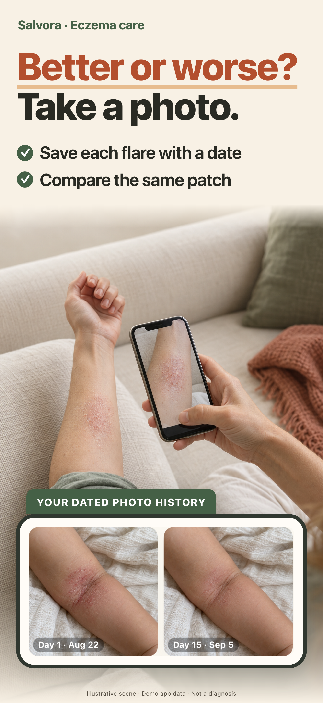
Скачать PNG · 1320 × 2868
{kind=link}
Проверка уменьшения: каждый кадр шириной 220 px. Заголовок 52 px и буллеты 24 px в исходной композиции 440 px.
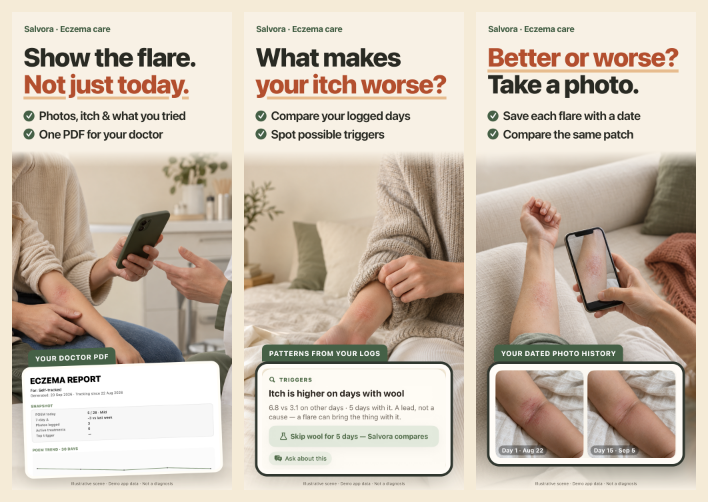
{kind=link}
Почему именно эти задачи и этот порядок
Jev сравнил причины скачать приложение, без предположения, что у всех сейчас ночное обострение или завтра приём. 24 синтетических профиля из шести когорт, два порядка вариантов: 48 вызовов, без ошибок. Когорты представлены поровну, реальный состав трафика неизвестен.
| Задача | Среднее модельное предпочтение | Решение для ряда |
|---|---|---|
| История и PDF для врача | 0.391 | Первый кадр: понятный итог и сцена разговора |
| Возможные триггеры | 0.170 | Второй: вопрос + конкретный предмет + данные |
| Ни одна задача не мотивирует | 0.167 | Существенная группа; не скрываем |
| Изменения кожи со временем | 0.146 | Третий: польза сравнения показана через фотографирование |
| Совет на сегодняшний вечер | 0.065 | Не в первой тройке этого общего ряда |
| Само фотографирование и фотоархив | 0.060 | Действие поддерживает пользу, а не заменяет её |
Порядок «врач → триггеры → изменения» — рабочая гипотеза, не измеренный рыночный спрос. История для врача особенно сильна в профилях Linda и Sarah; триггеры — в Rachel. Для родительского ночного трафика может понадобиться другой первый кадр.
Проверка понятности через Jev
Отдельный прогон: 12 синтетических профилей × два порядка ответов = 24 вызова. На входе точные заголовки, буллеты и текстовые описания сцен, не пиксели. Среди вариантов были фотоистория, врач, триггеры, диагноз, лечение и «непонятно».
| Кадр | Предполагаемый основной смысл | Вероятностная оценка Jev |
|---|---|---|
| 01 | История для обсуждения с врачом | 0.997 |
| 02 | Возможные триггеры из собственных записей | 1.000 (округлено) |
| 03 | Датированные фото и сравнение изменений | 0.993 |
Что взяли из референсов
SnapFlip: короткий вопрос и наглядное действие телефоном. JewelSnap: выделенное ключевое слово, крупное пояснение и конкретный результат. WatchSnap: сразу понятно, что фотографируют и ради чего. Cysta: узнаваемая ситуация рядом с доказательством пользы. Здесь те же принципы применены к экземе, без обещания распознать ожог или назначить лечение по фото.
Что настоящее, а что иллюстрация
Три новые постановочные сцены сгенерированы через ImageGen. Карточка триггеров и датированные фото — реальные фрагменты приложения; отчёт — настоящий экспорт PDF из демосессии 20 сентября. PDF показан фрагментом, не целиком. Данные и фото демонстрационные: сравнение не доказывает эффективность лечения. Интерфейс не нарисован генератором.
Три RGB PNG без альфы, 1320 × 2868. Перед отправкой в App Store — финальная сверка с релизной сборкой. Следующий тест: текущий контроль против t4 при одинаковых остальных материалах и источниках трафика; основная метрика — первые скачивания, а не подписки.
Исходники: marketing/appstore-v1/t4/. Протоколы и ответы Jev: research/screenshots-t4-2026-09-21/. Продолжаем на этой же странице; старые раунды ниже.
t3 · отслеживать экзему → замечать триггеры → сравнивать изменения
21 сентября 2026 · предыдущий раундКонцепт для ревью Первые три кадра для общей англоязычной витрины. Нажмите на изображение, чтобы увеличить; под каждым доступен оригинальный PNG.
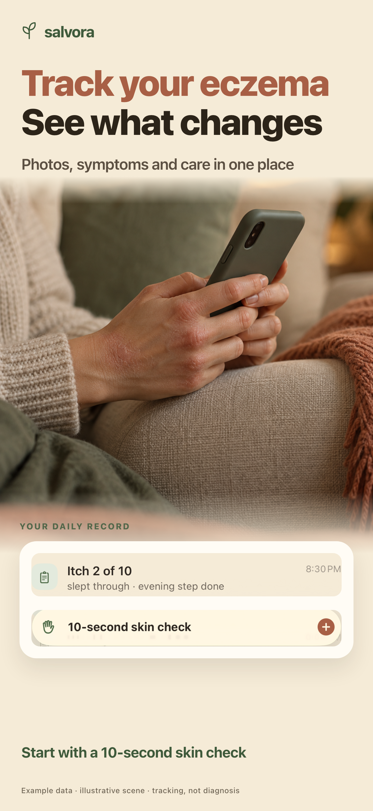
Скачать PNG · 1320 × 2868
{kind=link}
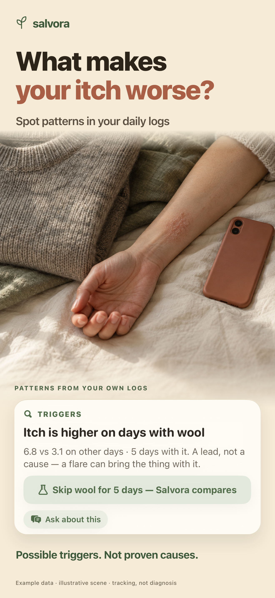
Скачать PNG · 1320 × 2868
{kind=link}
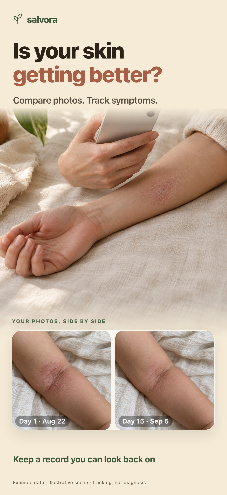
Скачать PNG · 1320 × 2868
{kind=link}
Ряд при ширине 220 px на кадр — для проверки чтения в уменьшении:
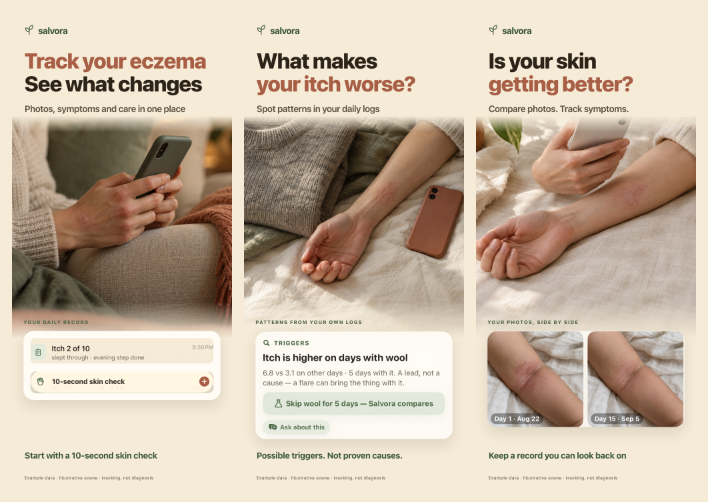
Открыть ещё меньше: 180 px на кадр
{kind=link}
Почему предлагается этот ряд
В t2 первые два кадра повторяют ночную помощь родителю. Для общей аудитории это сужает узнавание. В t3 первый кадр прямо называет экзему и действие, второй показывает пользу сравнения записей, третий — пользу фотоистории. Ночной сценарий остаётся кандидатом для отдельной страницы под родительский запрос.
Заголовки укорочены и набраны одинаковым кеглем, пояснение поднято к заголовку. На каждом кадре — одна польза и настоящий фрагмент интерфейса. Фото и карточки переиспользованы из предыдущей съёмки; текст интерфейса не перерисован.
Проверка текста через Jev
12 синтетических профилей из шести когорт × два порядка вариантов = 24 вызова, 0 ошибок. Новый контекст не предполагает, что у всех обострение именно сегодня ночью. Jev видел заголовки и подзаголовки, не готовые изображения.
| Вариант ряда | Модельное предпочтение по мотиву скачать | По понятности |
|---|---|---|
| A · существующий t2 | 0.156 | 0.033 |
| B · «Eczema flaring? What now?» + триггеры + сравнение | 0.070 | 0.053 |
| C · предложенный t3 | 0.693 | 0.784 |
| Ни один | 0.081 | 0.131 |
Понятность — вспомогательная оценка: вариант «ни один» в этом вопросе был сформулирован через мотивацию скачать. Когорты взвешены поровну, фактический состав трафика неизвестен. Нижние уточнения и визуальная компоновка Jev не проверялись.
Готовность и следующий тест
Экспортированы три RGB PNG без альфы, 1320 × 2868. Проверены переполнение текста и превью 180/220 px. Использованы снимки приложения от 20 сентября; перед финальным размещением в App Store нужно переснять актуальный UI. Сравнение фото демонстрационное, не доказательство эффективности лечения.
Следующий тест — t2 против t3 при одинаковых остальных скриншотах, иконке, метаданных и источниках трафика. Основная цель — фактические первые скачивания; переходы на страницу и начало подписки учитывать отдельно. Рост установок пока не измерен.
Исходники композиции: marketing/appstore-v1/t3/. Протокол Jev: research/screenshots-t3-2026-09-21/. Все обсуждения, следующие варианты и результаты добавляются сюда, новым раундом сверху.
t2 · шесть кадров по болям — от большей к меньшей
20 сентября 2026 · предыдущий раундПорядок считался с позиции человека, который только что набрал в поиске «eczema», о Salvora не слышал и видит лишь иконку, имя Salvora: AI Eczema Tracker, строку Atopic Dermatitis & Flares и три миниатюры шириной с палец. «Скачает» — вероятность выбора заголовка в слепом турнире; «понятно» — доля, где заголовок назвали самым ясным объяснением, что это за приложение.
| Боль по порядку | Заголовок | Скачает · понятно | Мысль, которую уносит человек | Что должно быть нарисовано | Карточка из сборки |
|---|---|---|---|---|---|
| 1 · Сегодня вечером тема 0.85 Linda .91 · Mike .93 · Rachel .90 · generic .96 |
What do I do about this flare tonight?One step for tonight, from NEA Tomorrow: did it help? 10 seconds. |
0.41 · 0.12 кликбейт |
«Мне скажут, что сделать до сна — прямо сегодня, а не через месяц наблюдений». | Вечер, лампа у кровати. Взрослая рука намазывает эмолент на предплечье ребёнка, на сгибе сухое покраснение; открытая белая банка без надписей на тумбочке. Лица нет. | Карточка «TONIGHT · ONE THING TO TRY — Cool, not hot», бейдж NEA, строка «Tomorrow, a 10-second check shows if it helped». |
| 2 · Ночь: звонить или ждать 0.11 боль Mike .58 |
Up at 3 a.m. with a scratching child?Four signs to check, in ten seconds Then one step for tonight, either way |
0.55 · — кликбейт |
«В три ночи не буду гуглить: четыре признака — и понятно, звонить сейчас или дожить до утра». | Ночник, детская рука в ладони взрослого поверх шалфейного одеяла, сухое пятно на запястье. Тихо, не страшно, лиц нет. | Лист «Is it serious?»: четыре красных флага, вердикт «None → a daytime call is fine», подпись «Based on NEA guidance». |
| 3 · Что делает хуже 0.20 · 0.20 Rachel .51 |
What is making it worse?Salvora compares your own days Wool days: itch 6.8. Without: 3.1. |
0.52 · — кликбейт |
«Приложение само сравнит мои дни и назовёт подозреваемого, а не выдаст общий список аллергенов». | Сложенный шерстяной свитер вплотную к предплечью с сухим покраснением, телефон рядом на простыне. Предмет-подозреваемый и его след — в одном кадре. | Карточка TRIGGERS: «Itch is higher on days with wool · 6.8 vs 3.1 · A lead, not a cause» и кнопка «Skip wool for 5 days». |
| 4 · Стало лучше или хуже 0.10 · 0.06 Jessica .28 |
Better or worse than last week?Same spot, same light, dated for you Day 1 was 13. Two weeks later: 7. |
0.26 · — понятный |
«Глаз замылился, а два снимка с датами и числом показывают правду». | Рука с телефоном над предплечьем: тот же ракурс и свет, что на снимках внутри приложения. Утро, льняная ткань. | Journal — «Your biggest improvement», Day 1 / Today, «POEM 13 → 7 · −6 in 14 days». |
| 5 · Разговор с врачом 0.39 заплатит Sarah .69 · Linda .68 |
Show the doctor what really happenedScore trend, photos, what you tried Ready 2 days before the visit |
0.37 · 0.21 понятный |
«Не буду пересказывать месяц по памяти за семь минут приёма». | Руки родителя в приёмной: детское предплечье с пятном на коленях, телефон и сложенный лист бумаги рядом. Лиц нет. | Вкладка Doctor: «Mia's page 6 of 7» и «Next visit · Tuesday, Sep 22 · in 2 days». |
| 6 · Спросить и проверить 0.07 · 0.06 тема последнего кадра 0.58 |
Is this cream OK for eczema?Ask in your own words, see the source AAD · Cleveland Clinic · Mayo |
0.37 · — кликбейт |
«Спрошу своими словами и увижу, откуда ответ — это не форум». | Вечер, руки с телефоном на льняном подлокотнике, на костяшках сухие трещины. Тёплая лампа. | Живой ответ Ask с раскрытым блоком «5 sources»: Cleveland Clinic — Eczema, AAD — Eczema Resource Center, AAD — Itch relief & skin care for childhood eczema. |
Что изменилось против t1. В t1 порядок строился по «за что заплатит» — первой стояла страница для дерматолога. Для действующего пользователя это верно (0.39). Холодный замер показал другое: тема «что делать сегодня вечером» первым кадром — 0.85 против 0.20 у страницы для врача, а заголовок «Walk in with proof, not guesses» объясняет, что это за приложение, лишь в 0.11 случаев (Mike 0.03). Согласие с претензией «витрина продаёт четвёртую неделю человеку, у которого проблема сегодня» — 0.76.
Первые три кадра — то, что видно в выдаче
Черновые генерации Нажатие увеличивает кадр.
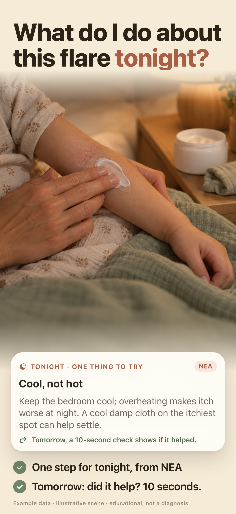
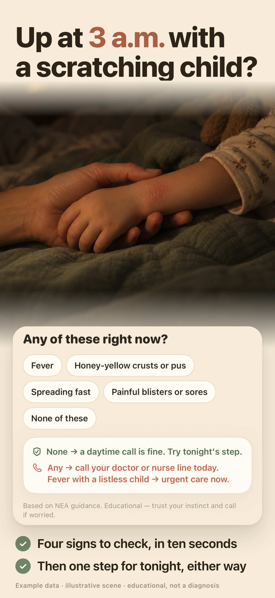
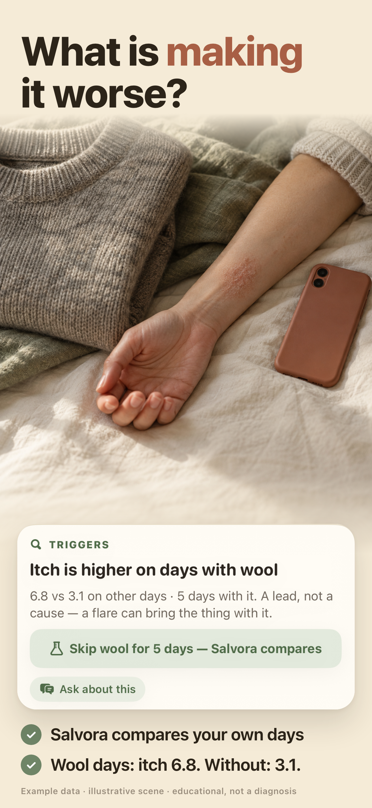
Как это выглядит в выдаче, 220 px на кадр:
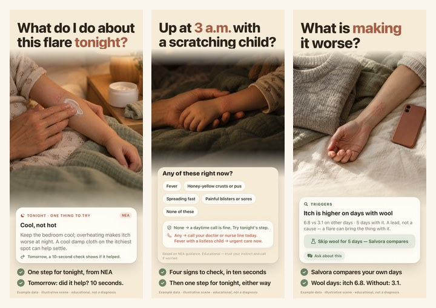
T04–T06
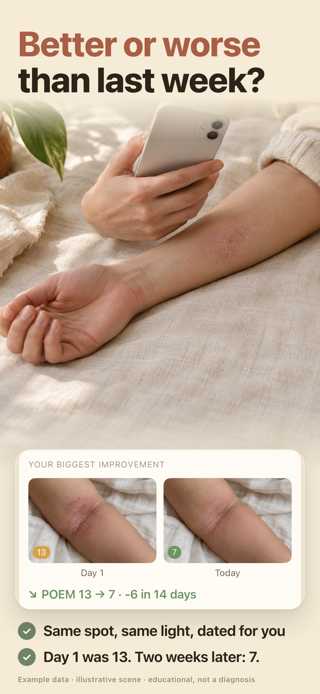
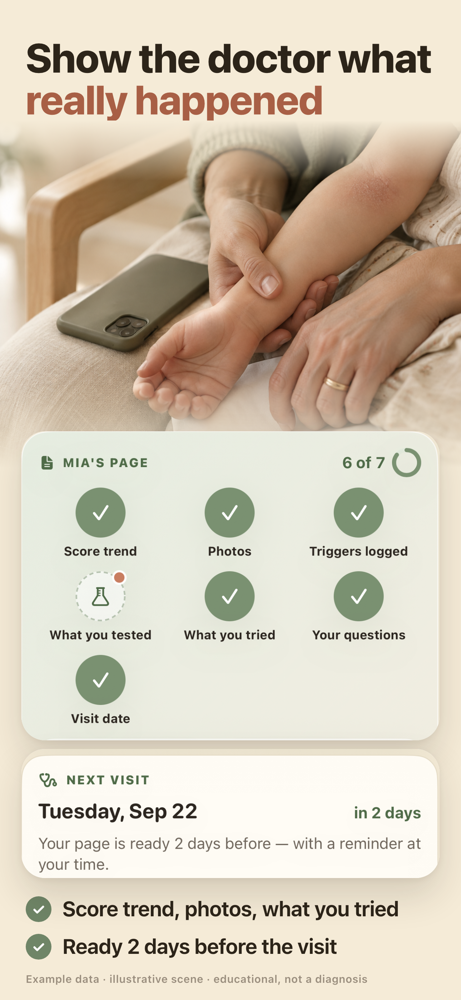
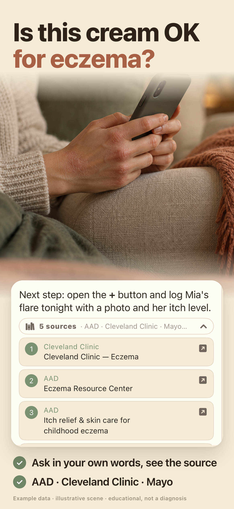
Весь ряд при 220 px:
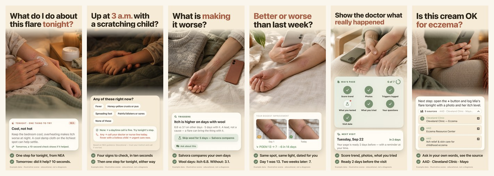
Карточки — настоящие пиксели сборки, не рисунок
Каждая карточка вырезана из снимка симулятора 1320 × 2868 (ветка love8ko/sprint). В t2 появились два экрана, которых в t1 не было: совет на вечер и живой ответ Ask с источниками — их сняли управлением симулятором (тап, свайп), а не дорисовали.
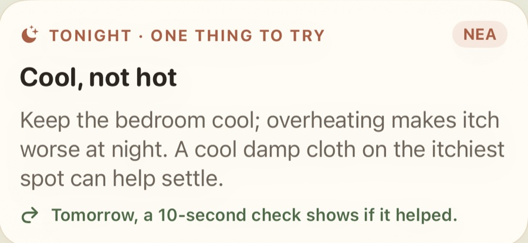
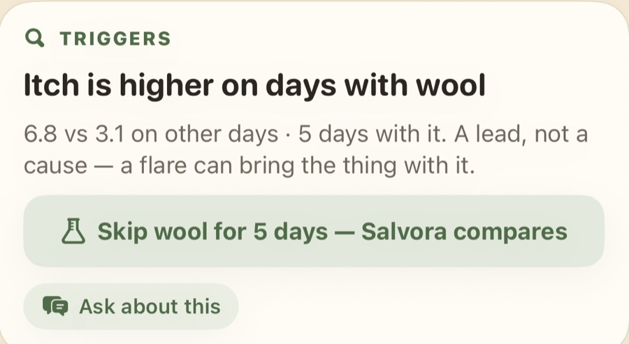
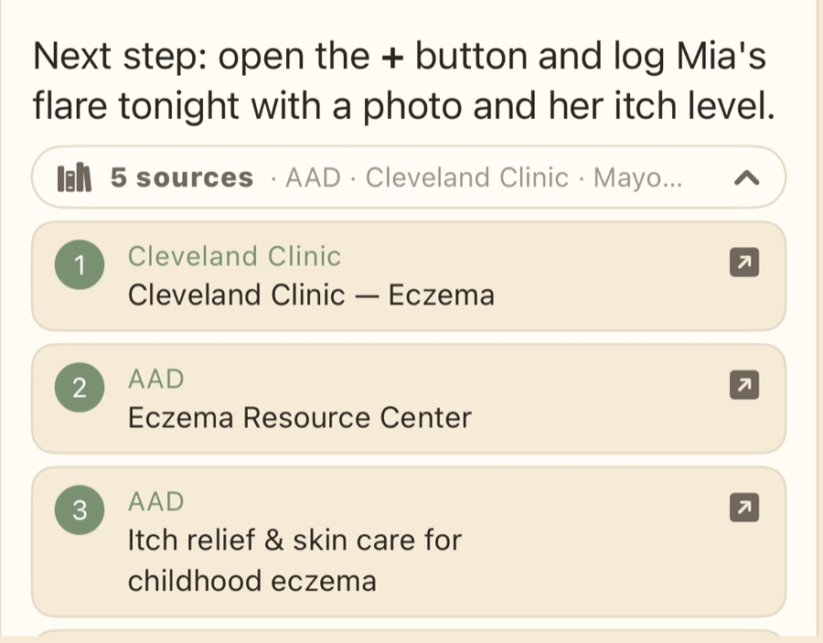
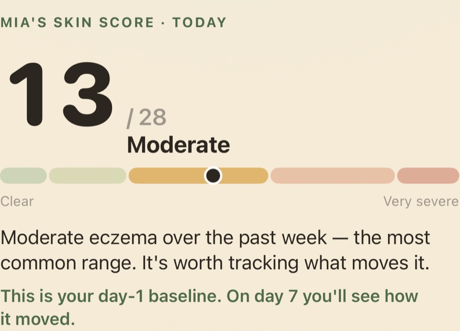
Что доделать в t2 (передаётся в производство)
- Сцены. Заново сгенерирована только первая (вечер, эмолент). Остальные пять — черновики из t1: нужна пересъёмка в одном свете, с одной «рукой-героиней».
- CPP со взрослыми руками (Jessica, Sarah, Rachel): те же шесть кадров, сцены без ребёнка, карточки из сценария «me». Сейчас в выдаче два педиатрических кадра из трёх — взрослые персоны отсекаются за полсекунды.
- 6.5″ (1284 × 2778) — та же вёрстка, другой холст.
- Локализация после утверждения английской серии: de-DE — полная пересъёмка, en-GB/CA/AU — только текст.
- Баг сборки: на вкладке Ask для ребёнка «Mia» предлагается вопрос «…start working for Emma?» — имя не подставляется в шаблон.
Почему именно эти заголовки
Три прогона Jev подряд, каждый — 24 синтетических человека × 2 прохода с обратным порядком вариантов, 48/48 без ошибок. Первый ставил вопросы человеку, которому продукт уже объяснили; второй и третий — холодному человеку в выдаче по слову «eczema». Это структурированное мнение модели, а не опрос: годится выбирать между вариантами, не годится как прогноз конверсии.
| Что проверяли | Число | Что это значит для кадров |
|---|---|---|
| Слово «eczema» или «flare» внутри заголовка | 0.69 | Человек останавливается чаще. Имя приложения он читает по диагонали — категорию должен называть и кадр. |
| Заголовок-вопрос, который человек уже задаёт себе | 0.66 | «Что делать сегодня?», «Что делает хуже?», «Это инфекция?» сильнее утверждений о пользе. В t2 пять кадров из шести — вопросы. |
| «Витрина продаёт четвёртую неделю, а проблема сегодня» | 0.76 | Претензия к t1 подтвердилась: первый кадр теперь про сегодняшний вечер, графики ушли глубже. |
| «Проще обойтись камерой и заметками, чем платить» | 0.70 | Главная угроза категории. Отвечают кадры 3 и 5: сравнение дней, которое вручную не сделать, и страница для врача. |
| Детская рука и «Mia's page» отсекают взрослых | 0.53 Rachel .65 | Половина взрослой аудитории читает витрину как «для родителей малышей» → отдельный CPP. |
| Капс в заголовке | 0.71 «крик» | Только строчные, 47 pt на холсте 430. Крупно ≠ капсом. |
| Ровно две крупные строки пользы | 0.55 | Только заголовок 0.35, три строки 0.09, мелкий подзаголовок с 4–5 буллетами 0.01. |
| Кожа и руки без лиц | 0.74 | Человек с лицом 0.17, кабинет врача 0.05, натюрморт без людей 0.00. Улыбающаяся модель с телефоном читается как сток (0.59). |
Понятность и кликбейтность — разные оси
Самый понятный заголовок («Track every flare in 60 seconds» — 0.51 по «понятно, что за приложение») почти не заставляет скачивать (0.09). Самый кликбейтный из t1 («Walk in with proof, not guesses» — 0.39 по «скачаю») почти ничего не объясняет (0.11). Поэтому в t2: заголовок бьёт в боль, а категорию называют две строки под ним и карточка — «one step for tonight», «wool days: itch 6.8», «5 sources · AAD». Заголовка, где обе оси сходятся, в этой серии не нашлось — если найдётся, это следующий раунд.
| Кадр | Победитель t2 | Скачает | Кого обошёл |
|---|---|---|---|
| T01 | What do I do about this flare tonight? | 0.41 | Walk in with proof 0.39 (Sarah 0.90) · Track every flare in 60 s 0.09 · How bad is your eczema today? 0.02 |
| T02 | Up at 3 a.m. with a scratching child? | 0.55 | 3 a.m. — doctor now, or morning? 0.27 · Call the doctor now, or wait? 0.11 |
| T03 | What is making it worse? | 0.52 | Find what sets it off 0.30 · Was it the new serum — or the wool? 0.12 |
| T04 | Better or worse than last week? | 0.26 | Photograph the patch 0.27 (ничья) · Your skin, week by week 0.19 · When you can't tell if it's better 0.13 |
| T05 | Show the doctor what really happened | 0.37 | Walk in with proof, not guesses 0.28 · POEM scores your dermatologist will read 0.19 |
| T06 | Is this cream OK for eczema? | 0.37 | Stop googling your eczema at 2 a.m. 0.32 · Ask anything. See the source. 0.12 |
Данные: research/screenshots-pains-jev-2026-09-20/ (боли, сцена, формат) · research/screenshots-cold-jev-2026-09-20/ (холодная выдача) · research/screenshots-lock-jev-2026-09-20/ (финальный турнир), ветка love8ko/screenshots.
Что сказали пять персон о кадрах t1 (Fable)
20 сентября 2026Пять персон смотрели готовые картинки t1 глазами человека, который только что искал «eczema»: сначала ряд 220 px, потом полные кадры. Оценки 1–5.
| Персона | Понятно, что за приложение | Это про меня | Скачаю | Какой кадр должен быть первым | Её заголовки своими словами |
|---|---|---|---|---|---|
| Linda — мама Мии, 3 года | 2 | 3 | 2 | ночной триаж | What is making her itch? · Show the doctor what really happened · Is the cream actually helping her? |
| Mike — папа, первый эпизод | 2 | 3 | 3 | ночной триаж, затем Ask | Call the doctor now or wait? · Is this infected or just eczema? · Tell me what to do tonight |
| Jessica — TSW, 4-й год | 4 | 2 | 2 | фото во времени | Are my flares getting shorter? · No one telling you to moisturize more · Face and neck, week by week |
| Sarah — на Dupixent | 4 | 2 | 2 | страница для врача | Is the biologic actually working? · POEM scores your derm will read · Proof for the insurance renewal |
| Rachel — взрослая экзема, руки | 4 | 3 | 3 | триггеры | Which product is breaking you out? · Was it the new serum? · Your hands, week by week |
- Mike: «Ни в одном из первых трёх заголовков нет слова eczema, rash, skin или itch. “Walk in with proof” я прочитал как спор со страховой». И приговор: «витрина продаёт выгоду четвёртой недели человеку, у которого проблема в ближайшие четыре часа».
- Linda: её фраза «Show the doctor what really happened» взята дословно и выиграла турнир (0.37 против 0.28 у нашей). Зелёная сетка «6 of 7» прочиталась как трекер привычек.
- Jessica и Sarah: «Mia's page», детская рука и «fever with a listless child» читаются как витрина для родителей дошкольника. Sarah: биологика в кадрах не существует, а из «Walk in with proof» не видно, что получается выгружаемый документ.
- Rachel: единственный показанный триггер — шерсть, а её подозреваемые (сыворотка, крем, порошок) в кадре отсутствуют, поэтому отличия от бесплатных она не видит.
- Что персонам понравилось: «That's a lead, not a cause» (честность вместо обещания причины), «A change of 3 or more is one you can feel», подпись «Example data · illustrative scene» на каждом кадре, палитра без «больнички».
- Фактические замечания, принятые в работу: в t1 два кадра показывали один и тот же график (дубль слота); в t2 такого нет. И числа на одном кадре должны совпадать с карточкой — строка кадра 4 исправлена на «Day 1 was 13. Two weeks later: 7», как в самой карточке.
Полные протоколы: research/fable-screenshots-2026-09-20/{linda,mike,jessica,sarah,rachel}.md.
Бриф на съёмку — правила, запреты, как снимать
Всё, что нужно, чтобы следующий раунд собрали без повторного обсуждения.
Шесть правил формы
| Правило | Число | Что это значит на кадре |
|---|---|---|
| Огромный заголовок в две строки, строчными | формат 0.55 · капс 0.71 | 47 pt на холсте 430 × 932 — примерно четверть кадра, ключевая фраза терракотой #A85F45. Три строки не допускаются: кегль ужимается автоматически. |
| Ровно две крупные строки пользы | 0.55 | 19,5 pt, каждая строка целиком, без переносов. Ни рядов буллетов, ни мелкого подзаголовка. |
| Кожа и руки, без лиц | 0.74 | Предплечье, кисть, локоть, шея, детская рука во взрослой ладони. Детских лиц нет ни при каких условиях. |
| Кожа честная, но мягкая | 0.62 против 0.43 | Сухое покраснение и шелушение — да; мокнутие, корки, кровь — нет. |
| Настоящие числа в строках | 0.60 | «6.8 против 3.1», «13 → 7», «6 of 7». Голое число непонятно (0.30) — всегда с единицей: «of 28», «day 1 was 13». |
| Карточка — пиксели живой сборки | — | Кроп настоящего снимка 1320 × 2868, увеличенный до читаемости в 220 px. Нет экрана в сборке — нет кадра. |
Чего не снимаем
- Приватность отдельным кадром — 0.01 и как причина скачать, и как причина заплатить. Это строка доверия в описании, а не слот.
- Стероидофобия — 0.01. Больная тема Jessica, но не то, за что открывают витрину.
- Ночи и пробуждения — 0.05: этим пользуются, но за это не скачивают.
- Лица и «героини» — 0.17 против 0.74 у кожи и рук, плюс запрет на узнаваемых детей в маркетинге.
- Телефон с полным интерфейсом — в 220 px это серое пятно.
- Натюрморт без людей — 0.00.
Чего нельзя писать на кадрах
- Никакой причинности: «крем подействовал», «шерсть вызывает обострение». Показываем разницу и дату проверки, а не причину.
- Никакого диагноза и слов «cure», «heal», «clear your eczema».
- Число всегда с единицей: «13 of 28», «down 8 since day 1».
- Фото не подписываем баллом POEM: POEM — недельный опросник из семи вопросов, а не оценка снимка.
- Никаких «N пользователей», отзывов и цифр рейтинга.
Как снимать экраны
- Симулятор iPhone 17 Pro Max, 1320 × 2868, светлая тема, статус-бар
--time 9:41 --batteryLevel 100. - Чистый кадр:
-salvora.hideDebugUI YESубирает плавающий ключ отладки. - Гейты (иначе приложение честно открывает пейвол):
-salvora.onboarding.done YES -salvora.subscription.isPro YES -salvora.setup.complete YES -salvora.disclaimer.acceptedAt <ts>. - Данные:
-salvora.debugScenario day30visit·-salvora.debugAudience child|me·-salvora.debugSituation tsw|biologic|flares|nights·-salvora.debugPhotoDir <testdata/photos>. - Экран и лист вместе не открываются:
-salvora.debug.startTab Nгасит уже поднятый лист. Снимать раздельно, пауза 8–9 с. - Тапы и свайпы — через serve-sim (
tap -d <udid> x y, координаты 0–1). Так сняты совет на вечер и живой ответ Ask с источниками. - Ничего не перерисовываем в дизайне и не придумываем строк. Если строки в сборке нет — сначала правим сборку.
t1 · предыдущая попытка — не подошла
20 сентября 2026 · отвергнутоАрхив Та же форма (огромный заголовок, сцена без лиц, карточка из сборки, две строки), но порядок и слова строились для человека, которому продукт уже объяснили. Холодная выдача этого не прощает.


| Кадр t1 | Почему не сработал |
|---|---|
| S01 Walk in with proof, not guesses | Объясняет, что за приложение, в 0.11 случаев (Mike 0.03, generic 0.02). Читается как страховой спор. Тема «страница для врача» первой — 0.20 против 0.85 у «сегодня вечером». |
| S02 Find what sets it off | 0.30 против 0.52 у прямого вопроса «What is making it worse?». Название приёма вместо вопроса человека. |
| S03 3 a.m. — doctor now, or morning? | Сильный кадр, но третьим и без слова «scratching»: 0.27 против 0.55 у «Up at 3 a.m. with a scratching child?». |
| S04 When you can't tell if it's better | 0.13 — последнее место в группе. Фраза Jessica, но для холодного человека слишком внутренняя. |
| S05 60 seconds. A score derms know. | Как первый кадр — 0.02. Балл понятен тому, кто уже понял, зачем ему балл. Остался внутри карточек. |
| S06 Ask anything. See the source. | 0.12 против 0.37 у «Is this cream OK for eczema?». Плюс в кадре была шапка вкладки вместо живого ответа — в t2 исправлено. |
| Общее | Шесть кадров из семи показывали состояние «месяц спустя»: 4 недели, 5 баллов, «6 of 7», «down 8 since day 1». Согласие с претензией «продаёте четвёртую неделю» — 0.76. Плюс два кадра дублировали один и тот же график. |
Провалы производства — честный журнал
20 сентября 2026Без этого списка кажется, что кадры «просто получились».
Сцены (Codex, GPT-Image)
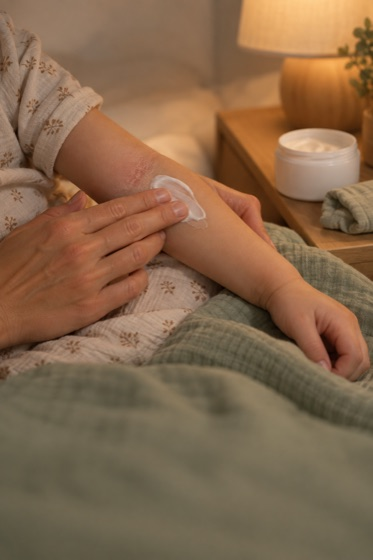


| Что | Как вышло | Что сделали |
|---|---|---|
| Разрешение | Codex отдаёт 1024 × 1536, полосе фото нужно 1290 px по ширине | Апскейл 1,26× при отрисовке. Для ASC лучше просить максимальное разрешение или апскейлить отдельно |
| Аффинитивность S06 | Сцена не говорит об экземе — просто уютная тумбочка | В t2 этот слот получил другую сцену; пересъёмка остальных — в производстве |
| Натюрморт без людей | Не генерировали вовсе | Jev дал 0.00 — тратить время незачем |
Съёмка живых экранов

isPro, но менеджер подписок при старте перетирает флаг. Лечится аргументом -salvora.subscription.isPro YES.
nowrap, кегль падает с 47 pt, пока не влезет.| Проблема | Причина | Решение / статус |
|---|---|---|
| Вкладка и лист одновременно не открываются | debug.startTab гасит уже поднятый sheet | Снимаем раздельно |
| Лист не успевал открыться | Снимок через 5 с после запуска | 8–9 с; два кадра переснимались |
| Не переключалась аудитория на взрослую | Передавали -salvora.debugAudience self; правильное значение — me | Найдено, взрослые сценарии теперь снимаются |
| В t1 не удалось снять страницу-PDF для врача | «Open page» открывает экран экспорта; дальше системный share sheet и чужое приложение Preview | Решено в t4: найден настоящий экспорт в данных симулятора; фрагмент первой страницы включён в кадр 01. |
| Нет UI-автоматизации | osascript не авторизован слать события (-1743) | Решено через serve-sim: тапы и свайпы. Так сняты совет на вечер и ответ Ask |
| Отладочная «гайка» в кадре | Первый снимок без -salvora.hideDebugUI YES | Переснято |
| Пустые кадры при сборке | Chrome по file:// не читает frames.json через fetch | Локальный http-сервер на время рендера |
| Chrome подвисал | --headless=new с общим профилем | --headless=old + отдельный профиль + сторож 45 с |
Архив · план мая 2026
май 2026 · не используетсяВ SCREENSHOTS.md лежал план: 5 Custom Product Pages × 6 слотов × 5 устройств = 150 композиций, у каждой персоны свой герой («Calm child illustration sleeping», «Anti-pharma framing», «Premium aesthetic + injection log»). В производство не пошёл:
- Объём. 150 композиций до первого релиза — способ не выпустить ничего.
- Герои-персоны. Сцена с лицом 0.17 против 0.74 у кожи и рук; детские лица в маркетинге запрещены нашим же
COMPLIANCE.md. - Слоты по фичам. «Photo journal demo», «AI Coach chat», «POEM severity tracking» — названия функций; в турнирах они стабильно проигрывают вопросу или результату.
- Диагностический заголовок. «Track Emma's eczema in seconds» подразумевает поставленный диагноз и имя ребёнка на витрине.
- 5.5″ и iPad. Apple больше не требует их для новых приложений.